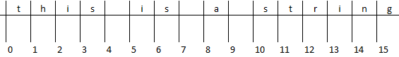

Python Quick Starter#
This starter kit was meant for readers that have never used python and have very little knowledge of programming concepts.
Note
Output results in this guide are marked as “>>>”. (don’t copy these lines, they are outputs from code written above it)
Installation - Windows Guide Only#
Download the latest version of python from python.org
During installation all the default selection will work, but pay attention to where python is being installed. The newer versions on windows will be placed under:
c/users/<yourusername>/AppData/Local/ProgramsOnce python is installed browse to folder it was installed in, something like
c/users/<yourusername>/AppData/Local/Programs/Python38-32and inside you will see apython.exe(OPTIONAL) Not being able to run python from the terminal is a common issue. There is usually a option during installation to add python to your windows
PATH, however if you cannot, then follow these steps to add it manually:Hit the windows start menu (bottom left windows icon)
Type
environmentand you are looking foredit environment variables for your accountHighlight
Pathand hiteditA new window will open, hit
newand paste in your path where python was installedc/users/<yourusername>/AppData/Local/Programs/Python38-32Hit
OKon both windows and you are good to go!
Running python: pull up a terminal (start menu > cmd > enter) and type
python. If the terminal hangs on windows trypython -iwhere-iis interactive, orwinpty python
Things you should know about:
Python is manually downloaded from python.org. There is no update button to get a newer version, you will have to go back to python.org and download a new version manually again.
When installing Python, you are also installing a python package installer (pip) that unlocks python’s superpowers. Packages can be imported with a single line of a code and before you know it you are scraping the web, working on excel/text files or performing machine learning with only 10 lines of code.
Everything in python is about versions. Python has a version, under it your pip has a version, under that your packages will have versions.
Run your first Script#
You have python installed and it works. Now you can type away at a python session in a terminal but once you close the terminal, your code will also be gone. So instead we can write a script can you can call any number of times:
create a script file (lets say on your desktop): Right Mouse Button > New > Text Document
rename it
myscript.pyopen it with your text editor (notepad++ is a decent pick)
type out your python code and save, example:
print("Hello World!")
run your script by typing
python myscript.pyin your terminal(your terminal has to be in the same folder). Start Menu > type “cmd” > enter > then in the terminalcd Desktopthen trypython myscript.py
Python High Level Concepts#
Important
Tthe following names are reserved for python internals, and should not be used as variable names: false none true and as assert break class continue def del elif else except finally for from global if import in is lambda nonlocal not or pass raise return try while with yield
Basics#
code comment:
# this is a commentdefine a variable (no declaration needed!):
a = 5basic types:
int:
1or2342134float:
1.0or2342134.12341234**be careful of numeric approximation Linkstring:
"this"or'that'both valid but double quotes is better for"it's a nice day"list (arrays if you prefer): 1D
[1,2,3]2D[[1,2,3],[10,20,30],[100,200,300]]
What can I do with integers/floats (math)#
a = 5
b = 10
c = a + b
print(c)
>>> 15
# add, subtract, multiply, divide, power
5 + 10 - 10 * 5 /5 ** 2
>>> 13.0
What can I do with strings#
split up text
a = 'this is a string'
# split text base on " " single spaces
b = a.split(" ")
b
>>> ['this', 'is', 'a', 'string']
# string literal
r"this is without a newline\n"
# this is binary
b"this is binary"
# multi-line string
"""
this
is
multilined
"""
# upper/lower/title
'this'.upper()
>>> 'THIS'
'this'.title()
>>> 'This'
# get count of character
'thiss'.count('s')
>>> 2
# get index of character (not it will be index of first occurrence)
'thiss'.index('s')'
>>> 3
# you can also use rfind or lfind to find a substring index
'thiss'.rfind('s')
>>> 4
# reverse string
'this'[::-1]
>>> 'siht'
# figure out if string is a digit
'this'.isdigit()
>>> False
'123'.isdigit()
>>> True
# note negative sign is does not qualify a string to be a digit
'-123'.isdigit()
>>> False
# join strings together
','.join(['t','h','i','s'])
>>> 'this'
replace characters
a = 'this is a string'
b = a.replace('s','S')
b
>>> 'thiS iS a String'
add two strings
a = 'this'
b = 'that'
c = a + b
c
>>> "thisthat'
# or use join, note items have to be in square brackets
d = ' '.join([a,b]) # join "a" and "b" with a " " space
>>> 'this that'
sub-strings (slicing)

a = 'this is a string'
a[0] # index to a character (python indexing start at 0)
>>> 't'
b = a[0:4] # give me the characters from index 0 to start-of index 4, t=0,h=1,i=2=s=3,4=' '
b
>>> 'this'
String Formatting
# f-strings (python3+)
f"x is equal to {x}"
# benefit is that f-strings allows you to perform arithmetic/logic on the spot
f"x is equal to {x + 5}"
f"x is equal to {x if x < 5 else x + 5}"
# format (python2-3)
"x is equal to {}".format(x)
"x is equal to {x1}".format(x1=x)
# % "modulo operator"
"x is equal to %(x1)d" % {"x1": x}
f"{1:4}"
>>> ' 1'
f"{1.11111:4}"
>>> '1.11111' # not what you would expect str-len is not 4
f"{1.11111:4.2}"
>>> ' 1.1'
f"{1.11111:2.4}"
>>> '1.111' # note that sigfig wins vs str-len
f"{1:<4}"
>>> '1 '
f"{1:>4}"
>>> ' 1'
f"{1:0=4}"
# note padding only works on int or float
>>> '0001'
f"{1:^4}"
>>> ' 1 '
f"{1:+}|{-1:+}|{1:-}|{-1:-}|{1: }|{-1: }"
>>> '+1|-1|1|-1| 1|-1|'
f"{123:d}"
>>> '123' # note that this does not convert a float to a int or str to int
f"{1:f}"
>>> '1.000000' # note flag f does convert a int to a float but NOT str->float
f"{1:e}"
>>> '1.000000e+00' # similar to float conversion
f"{1:%}"
>>> '100.000000%' # similar to float conversion
f"{1000:,}"
>>> '1,000'
What can I do with lists#
indexing
a = [10,20,30]
a[0] # python indexing starts at 0
>>> 10
a[0:2] # from index 0=10, to right before index 2=30 so that's 20
>>> [10,20]
add to a list
a = [] # empty list
a.append(10) # append one at a time
a += [20,30] # add another list to it
a
>>> [10,20,30]
2D array (really just a nested list)
x = [10,20,30] # 3 x-coordinates
y = [40,50,60] # 3 y-coordinates
myarray = list(zip(x,y))
myarray
>>> [(10, 40), (20, 50), (30, 60)]
myarray[1] # what is the x,y -coordinate of point 2 (note again python index starts from 0)
>>> (20,50)
myarray[1][0] # what is the x-coordinate of point 2
>>> 20
myarray[1][1] # what is the y-coordinate of point 2
>>> 50
How to write logic loops (if, for, while)#
equal: ==, not equal: !=, and: and, or: or
Note that are also bitwise operators as well such as | for or (ex: False|True will give you True back)
if statements
if 1 == 1 and 1 == 2:
print('1 is equal to 1 and also equal to 2')
elif 1 != 1:
print('1 is not equal to 1')
else:
print('none of the conditions were true')
for loop
mylist = [10,20,30]
for item in mylist:
print(item)
>>> 10
>>> 20
>>> 30
while loop
i = 0
while i < 3:
print(i)
i += 1
>>> 0
>>> 1
>>> 2
How to write functions#
# define function with 2 inputs
def myfunc(input1, input2):
result = intput1 + input2 + 10
return result
# call a function with inputs 1,2
func(1,2)
>>> 13
How do I read/write files (Input/Output IO)#
Although there are many ways to work with files, by far the safest is with “Context Manager”.
A Context Manager has an Enter and an Exit protocol that handles events. In terms of file IO,
with open opens a file stream on Enter, and closes file stream on Exit, therefore files are
always closed down once the code is done streaming it.
# read a file
with open("filename.txt", "r") as f:
while True:
line = f.readline()
if not line:
break
# write a file
text = ["hello", "world"]
with open("filename.txt", "w") as f:
for line in text:
f.write(line + "\n")
Open file object modes:
r: read onlyw: write onlyx: execution onlya: append to existing fileb: binary mode (this is combined withrorw+: open for updating (reading/writing)
Working with directories#
import os
from pathlib import Path
# returns a list of files/folders in current working dir
os.listdir()
>>> ['file1.txt', 'file2.txt', 'folder']
# or feed it a subdir path
os.listdir('./folder')
>>> ['subfile1.txt', 'subfile2.txt']
os.path.isfile('file1.txt')
>>> True
References#
Python Software Foundation, “Python3.9.7 Documentation” www.python.org (accessed Sep. 25 2021)